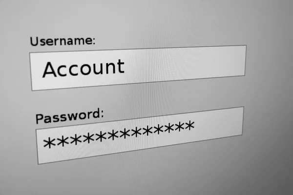

Fem ting, software gør
Software er det program, du sidder med: et login, en hjemmeside, en stemme, der svarer, når du bestiller. AI er en del af det. På denne side betyder AI de programmer, der forstår, hvad nogen siger, eller finder mønstre i store mængder data.
Chippen, som AI regner på, har sin egen side under Chips og halvledere. De computere, AI kører på, har deres egen side under Datacentre. Her handler det om, hvad softwaren gør for den, der bruger den.
Illustration: NewDeal Invest.

Fonden
Lidt over 2 kroner af hver 100
2,35%
af fonden ligger i Software & AI.
- Selskaber15 af fondens 373
- Største selskab i temaetSoundHound AI 0,85 % af fonden
Alle procenter på siden er andele af hele fonden, afdelingen PMINDI (NewDeal Invest klasse n, den udloddende andelsklasse, der udbetaler udbytte) pr. 16.10.2026. Hvor der står „af temaet“, er det skrevet med ord.
Temaerne er NewDeal Invests egen opdeling af fondens selskaber. Software & AI er et af de mindste.
Software & AI fremhævet blandt fondens 12 temaer.
Se alle 12 temaer
- Chips og halvledere: 24,31 %
- Energi og elnet: 16,96 %
- Datacentre: 12,59 %
- Platformsøkonomi: 10,56 %
- Robotter & fysisk AI: 7,23 %
- Råstoffer: 6,69 %
- Rumfart: 5,99 %
- Fintech: 5,22 %
- Krypto: 4,07 %
- Software & AI: 2,35 %
- Sundhed og biotek: 1,77 %
- Kvantecomputere: 1,57 %
AI i danske virksomheder.
59 %
af de private virksomheder med mindst 10 ansatte brugte kunstig intelligens i 2026. Året før var det 42 %. Tallet handler om brugen af AI i Danmark, ikke om fondens selskaber.
Kilde: Danmarks Statistik, tabel ITAV28 (åbner i nyt vindue).
Temaet
Mange navne, lidt vægt
Andel af hele fonden, afdelingen PMINDI pr. 16.10.2026
Flest selskaber betyder ikke den største andel. Gruppen, der holder uvedkommende ude (sikkerhed), har flest selskaber, men fylder mindst. Gruppen, der får maskinen til at forstå (AI-programmer), har kun to selskaber, men knap halvdelen af temaet. Over en tredjedel af hele temaet ligger i ét selskab, SoundHound AI, med 0,85 % af fonden.
Temaets selskaber gør fem forskellige ting for den, der bruger programmet. Prikkerne tæller selskaber. Bjælken viser andelen af fonden.
-
Når du logger ind på arbejdet, tjekker et program, at det er dig.
Selskaber6
Andel0,16 % af fonden
Fondens navn for gruppen: Sikkerhed
Sikkerhedssoftware holder øje med trafikken, stopper mistænkelige forsøg og styrer, hvem der må se hvad.
Tryk på et selskab for at se, hvad det laver.
-
Når du taler til bilen eller til en kundeservice, kan det være et program, der lytter.
Selskaber2
Andel1,11 % af fonden
Fondens navn for gruppen: AI-applikationer og træningsdata
En AI lærer af eksempler. Her er et selskab, der laver stemme-AI, og et, der hjælper andre med at træne og afprøve deres AI.
SoundHound AI havde en omsætning på omkring 1,1 mia. kr. i 2025 (årsrapport 2025 (åbner i nyt vindue)).
Tryk på et selskab for at se, hvad det laver.
-
 Når nogen laver en hjemmeside, et spil eller designet til en app, bruger de et værktøj.
Når nogen laver en hjemmeside, et spil eller designet til en app, bruger de et værktøj.Selskaber3
Andel0,42 % af fonden
Fondens navn for gruppen: Udviklerværktøjer og web
Værktøjer til at lave hjemmesider, spil i 3D og design. I designværktøjet kan flere arbejde i den samme fil på samme tid.
Tryk på et selskab for at se, hvad det laver.
-
 Når en vognmand vil vide, hvor lastbilerne er, samler et program data fra dem.
Når en vognmand vil vide, hvor lastbilerne er, samler et program data fra dem.Selskaber3
Andel0,45 % af fonden
Fondens navn for gruppen: Data og analyse
En virksomhed har data i mange systemer. Dataplatforme samler dem ét sted, så medarbejdere og AI kan bruge dem.
Tryk på et selskab for at se, hvad det laver.
-
 Når en ansat skal på forretningsrejse og bagefter afregne udgifterne, kan det ske i ét program.
Når en ansat skal på forretningsrejse og bagefter afregne udgifterne, kan det ske i ét program.Selskaber1
Andel0,21 % af fonden
Fondens navn for gruppen: Erhvervsapplikationer
Én platform, hvor virksomheder booker rejser og styrer de ansattes udgifter.
Tryk på et selskab for at se, hvad det laver.


Kendte programmer til virksomheder fylder lidt i fonden: CrowdStrike og Palo Alto Networks laver sikkerhedsprogrammer, der beskytter virksomheders it. Snowflake er en datasky, hvor virksomheder samler og deler deres data. De fylder 0,01 %, 0,04 % og 0,07 % af fonden. Palo Alto Networks havde fx en omsætning på omkring 76 mia. kr. i regnskabsåret til 31.07.2026.
Hvor meget af selskabernes omsætning der kommer fra AI, kan ikke opgøres. Flere selskaber skriver selv, at deres produkter er drevet af AI, men det er deres egen betegnelse og ikke en målt andel af omsætningen.
Naboerne
Også med en fod i software
Software findes også hos selskaber, der tjener deres penge på noget andet. Upstart har fx bygget sine egne AI-modeller, men er en markedsplads for lån og står derfor under Fintech. Disse selskaber tæller ikke med i temaet, men fylder tilsammen mere i fonden end selve temaet. Den største af dem, AppLovin med 1,22 % af fonden, fylder mere end temaets største selskab, SoundHound AI med 0,85 %. Oracle, Microsoft og Cisco står under Datacentre.
- AppLovinHovedtema: Platformsøkonomi1,22 % af fonden
- Upstart HoldingsHovedtema: Fintech0,61 % af fonden
- OracleHovedtema: Datacentre0,56 % af fonden
- LemonadeHovedtema: Fintech0,31 % af fonden
- Tempus AIHovedtema: Sundhed og biotek0,15 % af fonden
- SwarmerHovedtema: Robotter & fysisk AI0,13 % af fonden
- MicrosoftHovedtema: Datacentre0,11 % af fonden
- Cisco SystemsHovedtema: Datacentre0,09 % af fonden
- CourseraHovedtema: Platformsøkonomi0,06 % af fonden
- MNTNHovedtema: Platformsøkonomi0,05 % af fonden
- Zeta GlobalHovedtema: Platformsøkonomi0,04 % af fonden
11 selskaber med i alt 3,33 % af hele fonden, afdelingen PMINDI pr. 16.10.2026. Hovedtemaet er det tema, selskabet tæller med i.
Set udefra
Forklaret og i nyhederne
Videoer og opslag er forklaringer og nyheder udefra. De er ikke fondens holdning.
To videoer mere
Unity for Games @unitygames · på engelsk
Kort fortalt Kontoen Unity for Games oplyser, at Claude Code, Anthropics AI-program, der skriver kode, nu kan styre Unitys program til at bygge spil direkte. Det sker via en officiel tilføjelse fra Unity.
The Information @theinformation · på engelsk
Kort fortalt Ifølge The Information har hackere gjort Claude og Grok til et netværk af AI-agenter, altså programmer, der selv udfører opgaver. Agenterne angreb på egen hånd mere end 400 finansielle institutioner og andre mål. Mediet skriver, at oplysningen stammer fra en undersøgelse fra cybersikkerhedsforskere.
Social Capital @socialcapital · på engelskDelt af Mads Christiansen fra teamet bag NewDeal Invest · delingen på X (åbner i nyt vindue)
Kort fortalt Kontoen Social Capital oplyser, at AI-modellerne fra det kinesiske selskab DeepSeek i sidste uge af september blev brugt mere end modellerne fra OpenAI, Google, Anthropic og xAI tilsammen på OpenRouter, en tjeneste, hvor man kan bruge mange AI-modeller ét sted. Brugen er målt i tokens, de små tekststykker en AI-model læser og skriver.
Nyhed om software
MongoDB @MongoDB · på engelsk
Kort fortalt MongoDB oplyser, at databasetjenesten Atlas nu kan bruges som datalag, når AI-agenter skriver kode i Grok Build, et udviklingsværktøj fra SpaceX Super Intelligence (SpaceXSI). Ifølge MongoDB kan agenterne oprette databaseklynger, indlæse data og sætte søgning efter indhold med samme betydning op ud fra almindelig tekst, med indbygget godkendelse fra et menneske. MongoDB er ikke blandt fondens selskaber pr. 16.10.2026.
Opslagene er udvalgt af teamet bag NewDeal Invest. Afsenderne og de nævnte selskaber står ikke bag denne side, og opslagene er ikke fondens vurdering.
Det skal man vide om temaet
- Få selskaber fylder det meste. SoundHound AI er 0,85 % af fonden, over en tredjedel af temaet. De fem største selskaber, SoundHound AI, Palantir Technologies, Unity Software, Innodata og Navan, er tilsammen 1,95 % af fonden, over fire femtedele af temaet (afdelingen PMINDI pr. 16.10.2026).
- Få kunder kan fylde meget. Én kunde stod for omkring 58 % af Innodatas omsætning i 2025 (årsrapport 2025 (åbner i nyt vindue)).
- Vækst gennem overtagelser. SoundHound AI's omsætning steg 99 % i 2025, især fordi selskabet havde overtaget andre selskaber (årsrapport 2025 (åbner i nyt vindue)).
- Offentlige kunder. Palantir Technologies fik omkring 54 % af omsætningen i 2025 fra offentlige kunder (årsrapport 2025 (åbner i nyt vindue)).
- Software kan leve af andet end software. Unity tjener mest på annoncer (kvartalsrapport for 2. kvartal 2026, 06.08.2026 (åbner i nyt vindue)), og Navans omsætning afhænger af, hvor meget virksomhederne rejser (kvartalsrapport for kvartalet til 31.07.2026, 10.09.2026 (åbner i nyt vindue)).
- Mange små andele. 10 af temaets 15 selskaber fylder hver mindre end 0,10 % af fonden (afdelingen PMINDI pr. 16.10.2026).
Afsnittet beskriver temaet og vurderer det ikke. Kilden står ved hvert punkt.
Kilder og kreditering
Fondens tal er fra afdelingen PMINDI pr. 16.10.2026. De øvrige kilder står ved tallene og samlet herunder.
Se alle kilder og krediteringer
Tal
- Andele: afdelingen PMINDI pr. 16.10.2026 (fondens data). Temaer og undergrupper: NewDeal Invests egen opdeling.
- Selskabernes beskrivelser: selskabernes årsrapporter (10-K), linket i afsnittet om temaet og ved de enkelte tal.
- Palo Alto Networks' omsætning: årsrapport for regnskabsåret til 31.07.2026 (åbner i nyt vindue). SoundHound AI's omsætning: årsrapport 2025 (åbner i nyt vindue). Omregnet til kroner med Nationalbankens gennemsnitskurs for 2025. Palo Alto Networks' regnskabsår slutter 31.07.2026, men er omregnet med samme kurs (Danmarks Statistik, DNVALA (åbner i nyt vindue)).
- AI-brug i danske virksomheder: Danmarks Statistik, ITAV28 (åbner i nyt vindue), private virksomheder med mindst 10 fuldtidsansatte inden for industri, forsyning, byggeri, handel, transport, overnatning og restauranter, IT og medier samt erhvervsservice (ikke landbrug, råstofindvinding og finans). Målt i januar 2025 og januar 2026.
Billeder, video og opslag
- Tegninger, ikoner og videoplakater. Illustration: NewDeal Invest.
- Foto af login: Santeri Viinamäki, “Username and password 20170626” (åbner i nyt vindue), Wikimedia Commons, CC BY-SA 4.0 (åbner i nyt vindue). Beskåret af NewDeal Invest. Beskæringen deles på samme licens.
- Videoer: TjekDet, en kort forklaring af kunstig intelligens (på YouTube med titlen “Du nemme forklaring: Hvad er kunstig intelligens?”), 02.01.2024, lavet sammen med Tenk.no som undervisningsmateriale. P3 Essensen (DR), “Hvorfor er hacking så stor en trussel mod Danmark?”, 11.05.2023. SoundHound AI, “DEMO: Dynamic Drive-Thru Powered by SoundHound AI”, 14.04.2025. Alle på YouTube.
- Opslag: Unity for Games, Social Capital, The Information og MongoDB på X. Opslagene vises først, når du trykker på dem.
- Logoer tilhører de enkelte selskaber.